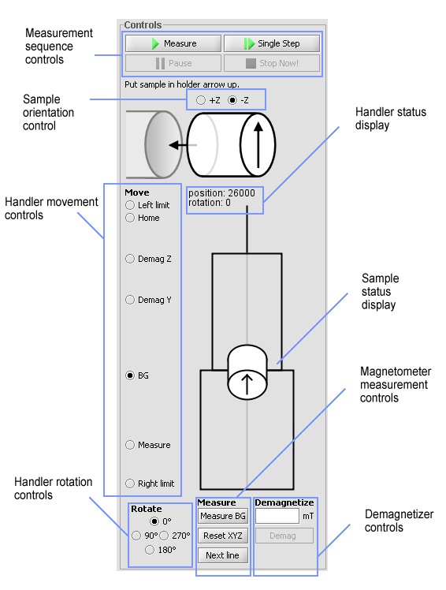

Manual Controls
Handler movement controls
- Left limit
Moves the handler to left until it reaches the left limiter. - Home
Seeks the home position. - Demag Z
Moves the handler to demagnetizing position for Z-axis. - Demag Y
Moves the handler to demagnetizing position for Y-axis and X-axis. - BG
Moves the handler to background noise measurement position. - Measure
Moves the handler to magnetometer measurement position. - Right limit
Moves the handler to right until it reaches the right limiter.
Handler rotation controls
Rotation of the handler is choosed by selecting the corresponding degree.Handler status display
Shows the current location of the hanlder in steps and rotation in degrees.
Sample status display
Shows the current location and rotation of the sample.
Magnetometer measurement controls
NOTE: These controls are available only when the handler is in BG- or Measure-positions
- Measure BG / Measure XYZ
Measures the background noise or the XYZ-values depending from the handler position. - Reset
Resets the magnetometer. - Next line
Locks the current measurement and adds a new line to sequence.
Demagnetizer controls
NOTE: These controls are available only when the handler is in demag Z- or demag Y -position.
Sample is demagnetized by writing the preferred demagnetation field in mT:s to textfield and then pressing
Demag-button. If the given value is out of range the field will flash red.